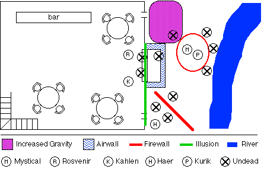

Rosvenir the Astrologer sat at the bar, thinking of stars.
Mystical flirted with three merchants at a far table, just passing time really. Her initial contact with Ahrens the Sage that day had been promising, and she was to return on the morrow.
The remaining tables in the tavern were occupied by rivermen well on their way to a roaring drunk. The tallest of the drunken sailors stood and muttered something about draining the lizard. He walked to the front door and stood for a moment attempting to see through the incredibly thick fog which had rolled in. He took a hesitant step, then another, and must have briefly considered draining the lizard where he stood. Such thoughts were interrupted by the rapid approach of something through the fog. He shouted, "By the Gods, no!" just before being suddenly jerked forward where he disappeared into the mist. There followed a muffled scream and heavy thump, then silence.
Kurik was in motion before the cry had faded. Reaching the doorway
he stood peering into the fog bank for a moment, where he was joined by
Mystical and Rosvenir. Kurik took a cautious step forward, then another, and
by the third step could no longer be seen in the mist. There came a
metallic clanking noise as Kurik tripped over something at his feet.
Haer and Kahlen rose from their table near the bar, Haer deftly
lifting a bottle of expensive wine as he passed. Meanwhile Mystical cast
Detect Life but found nothing in the fog save Kurik. By this time
Rosvenir had completed the casting of Unfog X, causing a 25 foot
radius of the fog to dissipate (far less than normal for the spell). Kurik
had tripped over the decapitated body of the sailor, blood still flowing
from the wounds. Arrayed in a semicircle about the paladin were ten ghoulish
creatures, their eyes glowing dimly.
Mystical rushed forth to join the warrior and summoned a circular
wall of fire about the two of them, catching three of the undead in its
flames. Kurik cast Repel Undead XV but none of the creatures
succumbed to it, an ominous sign. These were powerful undead. The three
closest attacked the paladin, but the first was unable to see through the
flames and stumbled badly while the other two clawed futilely at his plate
armor.
Haer crept through the door and along the front of
the building. Kahlen and Rosvenir both prepared defensive spells, Rosvenir
summoning an Airwall about the door of the tavern and Kahlen casting
Bladeturn upon herself in preparation for melee. Haer cast Lesser
Illusion to make the door and closest window appear to be a solid wall,
in hopes the undead would be fooled.

The creatures advanced upon the tavern. Two had made it to the door
before the illusion went up, though the rest were confused by it. Kurik fought
with the pair remaining in front of him, cleaving one nearly in two and taking
only minor wounds in return. Mystical created Increased Gravity near the
door to the tavern, further slowing the undead there. Meanwhile, three of them
shambled towards Haer, who used the Longdoor ability of his cloak to
blink away to the edge of the river.
Chaos reigned inside the tavern as the merchants and sailors cowered
in corners or fled upstairs, away from two shambling ghouls. Kahlen planted an
arrow deep into the torso of the one closest to her. Rosvenir sent a
Starbolt at the other, knocking it to the ground with a huge hole in its
abdomen. Another ghoul forced its way through the airwall and illusion,
stepping on its fallen comrade.
Mystical next created a Firewall, blocking two of the ghouls
that had threatened Haer. The third moved quickly and slashed as the halfling
ran towards the corner of the building, inflicting a grazing wound. Casting
Spider Walk as he ran, Haer walked nimbly up the wall to the roof. Kurik
hacked at a ghoul that had caught fire, removing one of its arms. It slashed at
him with the other.
The ghoul trapped in the increased gravity dragged itself out and
through the circle of fire, clawing ineffectively at the back of Kurik's armor.
Mystical attacked with sword and dagger, driving it back. Kurik summoned a
Holy Aura which gravely wounded the ghoul behind him and caused the one
in front to implode messily.
Two ghouls had noticed Haer run back to the corner of the tavern,
and attempted to climb the drainpipe to get to him. Haer took a bottle of thin
grease from his pouch, pouring it down the outside of the drainpipe. Amazingly,
the first ghoul managed to cling to a bracket halfway up the pipe though it
could make no further progress. Seeing this Haer pulled a strong crowbar from
his bag of holding, levering the drainpipe loose from the wall. The ghoul was
dropped into the wall of fire, where the grease coating its arms burst into
flame.
The two ghouls in the tavern pressed the attack, driving Kahlen and
Rosvenir back. Kahlen sent an arrow straight into the brain of the first,
though being undead it didn't seem to mind. The second clawed at Rosvenir and
bit his forehead, stunning him. Rosvenir instinctively cast Unstun and
backed away, putting the bar between himself and the creature.
Mystical extinguished the circle of fire, allowing herself and Kurik
to engage new targets. Kurik dispatched the ghoul behind him. Mystical fought
with the second ghoul which had attempted to climb the drainpipe, hacking its
leg. It clawed at her but inflicted no damage.
From his vantage point atop the tavern Haer spotted one of the
remaining ghouls breaking the far window of the Inn (which was not covered by
the illusion). Haer hit it with a sling bullet, breaking its neck and dropping
it to the ground before it could enter the building. Meanwhile Mystical traded
blows with the creature facing her.
Rosvenir circled the bar once and ran to the far corner of the room.
He sent a Fire Bolt at the ghoul chasing him, wounding it grievously.
Kahlen planted another arrow in her opponent, which was beginning to resemble a
pincushion. Kurik dispatched the ghoul with the broken neck, which was still
attempting to crawl in through the window.
Three ghouls remained, all badly damaged. Haer walked
down the wall of the tavern, dispelling the illusion as he did. Kahlen landed
another arrow, finally destroying the creature facing her. Kurik entered the
tavern, his aura dispatching the smoldering ghoul facing Rosvenir. Mystical
efficiently vivisected the remaining creature.
The thick fog began to dissipate, though Mystical detected traces of
residual magic in it. Kurik and Mystical did a complete circuit of the
building, checking that none of the creatures remained. Fortunately none of the
patrons of the bar had been injured, though it took a bit of coaxing to get
them to come back downstairs. While no-one was looking Haer palmed the gold
coins the merchants had left on their table when they fled.
There was a visible tattoo on the dismembered arm of one of the
undead which said "Payvin's Pearl". On hearing this the sailors
related that the Payvin's Pearl was a barge which had plied the river trade
until one week ago, when its entire crew mysteriously disappeared. Most thought
they had left to find better pay elsewhere, but the ship's master Payvin was
badly shaken and had not stepped foot on the boat since.
Having dispatched the undead the various adventurers introduced
themselves. It being very late, investigation of the origin of the ghouls and
the Payvin's Pearl would have to wait until the morrow. Khale the Innkeeper
offered free rooms for the night in gratitude for saving his Inn and its
patrons.
Rosvenir cast Dream to know of the Payvin's Pearl and her
crew.
Rosvenir's Dream
A barge, travelling along a river... Dark storm overhead...
The barge sinks suddenly, and resurfaces next to a pier... The captain
peers from a window nearby, terrified...
Day 2
In the morning a hearty breakfast was served. Mystical left the Inn
to see Ahrens the Sage, whilst everyone else went to the pier to find Payvin's
Pearl. The Pearl was an ordinary looking barge, moored at the far end of the
docks. There was no-one aboard, and no ladder to board her. Kurik and Rosvenir
went back down the pier to find the dockmaster and convince him of the need to
board the vessel.
Haer's stream of consciousness at this point
Good, just a little bit further down the pier... wait... now, they
can't see me anymore. I know there's a ladder in here somewhere...
here it is...
"Kahlen, could you steady the ladder?" ... Jeez, the handrail is
pretty worn...
Hmm, empty deck... Small mast, sails look pretty frayed...
Two doors to the center cabin...
Haer's conscious mind takes no notice as he picks the lock...
Stairs going down...
Looks like a bunk room... No chests, no false panels... Hmm, more rooms...
Looks like the cargo hold... no cargo, hmm...
I'm hungry, gotta go get some food after this...
smells like they carried grain... rat droppings, figures... hmm...
Dockmaster might be coming by now... up the stairs...
boy that was funny with the ghoul on the drainpipe,
gotta remember to get another bottle of latch grease...
a lock on the door? should probably lock it...
wouldn't want untrustworthy sorts going belowdecks...
ooh, my foot hair looks nice...
"Thanks Kahlen, could you help me get the ladder back in the
bag of holding?"
Meanwhile, in the Dockmaster's office
Kurik: "It is imperative that we gain access to the Payvin's Pearl. A great
evil may have occurred there."
Dockmaster: "That be well and fine, but Payvin be the captain and he be the
one who says who be goin aboard the Pearl. Why, I remember the days
even the landlubbers like yeself had respect fer the powers of the
captain of a boat. Nowadays ye be in too much of a hurry, wantin
to get ye way without..."
Kurik: "Where is Payvin?"
Dockmaster: "Do ye think I'm his keeper? I don't rightly know where Payvin
is now, but if ye weren't in such a blasted hurry all the time
maybe ye would wait for him to show hisself. Though it be true
that I've seen him with the Master of the Pier a great deal since
his crew left. Still, a man's got to...
Rosvenir (casts Question): "Where is the Master of the Pier?"
Dockmaster: "Out the door, to the left, down two blocks."
Around noon, day 2
The Master of the Pier turned out to be a disreputable looking pub
near the docks. Haer and Kahlen met Kurik and Rosvenir at the Dockmaster's
office, with Mystical catching up on the way. Entering the establishment, Haer
went immediately to the bar and ordered breakfast (his second that day), and
flirted a bit with the barmaid. After speaking briefly with the barkeep Kurik
and Rosvenir went to a table in the corner where a sailor sat drinking. He was
in his mid 50s, and looked in reasonably good shape save for an extreme lack of
sleep. This was Payvin. Payvin wasn't in a talking mood, but warmed up soon
enough when fresh ale was offered.
Kurik: "We believe the men of your crew have returned as undead."
Payvin: (pause) "I know."
Kurik: "How?"
Payvin: (pause) "I left the Pearl a' dusk that night, to get the final
supplies. The plank were pulled up when I left. When I came back,
the fog had rolled in thicker than I've ever seen it in me 30 years
on the river. I called out for Simon to lower the gangplank, but
nothin happened. I thought the crew be playin a joke on me. I'll
be damned if I'd let them get one up on me, so I took a run at it
and jumped aboard. There be no-one aboard above or below, the crew
be gone."
Rosvenir: (pause) "Go on."
Payvin: "Back on the deck I thought I saw movement above me, when I looked
up I saw two giant bloodshot eyes in the mist. A voice spoke: 'Do
you also seek your end, mortal flesh? The Devourer will consume your
soul itself.' It laughed then, made me skin crawl. I ran to the rail
and jumped overboard, and swam til I could nae swim more. I
woke up the next morning on the river bank." (pause) "Me crew..."
Payvin sobbed for a few moments, and said he would never set foot on
the Pearl again but didn't care if anyone else did. Then he passed out on the
table. The group determined to search the Pearl thoroughly. When no-one was
looking Haer picked Payvin's pocket to get the key to the ship's cabin. On the
way back, Mystical said she knew of the Devourer. He is a demon, formerly the
most powerful minion of Orcus. Upon the destruction of Orcus 800 years ago the
Devourer vowed to take his place and avenge his master. Mystical had visited
the Sage Ahrens to hire him to research everything he could find about the
Devourer, and of the recent activities of other former minions of Orcus in the
countryside near Kalstrand. She was to return the next day to learn of his
progress.
Realizing that a Death's Tale spell on the ghouls of Payvin's
Pearl could provide a great deal of information, the group returned to Khale's
Inn. Unfortunately, the bodies had been burned, making such impossible.
[Editor's note: we were supposed to have thought of that the previous
night]. On the bright side, Haer got to eat another fine meal at Khale's
Inn.
Near dusk the group returned to the Pearl and searched it
thoroughly. Nothing was found save a love note found wedged beneath one of the
bunks from a crewman named "Simon" to someone named
"Snookiewookums". Guards were posted through the night, but nothing
untoward happened.
Day 3
There seemed to be nothing to learn aboard the Pearl. The group went
to see Ahrens the Sage early the next morning. Ahrens had researched through
the night, poring through his oldest tomes concerning the Outer Planes to find
the knowledge he sought.
Mystical: "Here are the 50 pieces of gold as agreed, plus two extra for
your effort."
Ahrens: "Thank you. Concerning your first question, on the nature of the
Devourer, I found his symbol in an ancient tome by Zagyg. Here it
is." (hands over a tattered drawing of a horned, bearded face, its
mouth open wide and filled with an inky blackness)
Haer: "Hey! That looks like the carving in the entry hall of the Tomb of
Acerak!"
Kahlen: "You're right, it does indeed."
Rosvenir: "What tomb is that?"
Kahlen: "It is an underground complex in the Great Swamp, many miles to
the south. Haer, Chaste the Paladin, Silk One-Eye, Jobe, and I were
commissioned by the King to deal with the evil gathering there twenty
years ago."
Kurik: "Was that Chaste the Mighty? I believe I have heard legends of him."
Kahlen: "Yes, that was him. A brave man, right Haer?"
Haer: (examining a sextant inlaid with gold) "What? Oh yeah. Brave guy. Yup."
Ahrens: "As I was saying, the Devourer was a powerful minion of Orcus.
The Devourer is attempting to enter and merge with the fabric of
the Negative Material Plane at an area called the Final Void. All
life, light, and knowledge eventually flow to the Negative Material
Plane to become part of the Final Void. Bigby's Arcanum of the
Planes states that when the Devourer is truly one with the Final
Void, all knowledge shall be his and he shall be like unto a God.
I am afraid I cannot explain further than that, the physics of the
Planes is extremely complicated, but this is troubling."
Mystical: "I understand. It is very troubling."
Ahrens: (pauses) "Perhaps you do. I also found mention of Desatysso, a
powerful mage who twenty years ago was researching the Sign of
the Devourer. He lives in a small fortress in the mountains near
Kalstrand, though I have not seen him for many years. I have prepared
a map for you, as he may be able to tell you more about the Devourer
than I have been able to discover here."
Mystical: "Thank you. What of the second question, concerning recent
activities of other minions of Orcus in this area?"
Ahrens: "Of that I am afraid I have found nothing. I will continue my
researches on this topic. Please return in a week, I may have
something for you by then."
It was market day in Kalstrand, all players would be allowed to trade objects and gold freely amongst themselves for one turn. [Editor's note: A bad Talisman joke from the gaming session. I felt compelled to repeat it here.] The group stocked up on supplies and loaded their horses. They left town shortly after noon, following the map Ahrens had drawn. Eight hours of riding brought them two thirds of the thirty miles to the foot of the mountains. Making camp, the night passed uneventfully save for a brief appearance by a pack of wild dogs. Several Suddenlight spells and a sling bullet drove them away (though Kurik healed the leg of the dog hit by the sling, so it could rejoin its pack).
Day 4
The following day brought them to the foothills and thence to an
immense, rocky slope. It was impossible to ride up the shifting mass of shale,
so the horses were loosely tied in a secluded cave to one side. Rosvenir cast a
Fly spell upon himself and Kurik, while Kahlen cast a similar spell and
Haer cast Float so as to be dragged along by Kahlen. Rosvenir and Kurik
could fly considerably faster than the others, and so got to the top of the
slope before the rest were even halfway. That is when the giants attacked.
Two giants stood at the top of the slope, their grey skin blending
in to the background. Fortunately Rosvenir noticed a hint of movement, and
shouted a warning before the boulders flew towards them [Editor's note:
rolling 309 on Alertness will do that.] The warning allowed Rosvenir to
cast Whirling Winds and Kurik Deflections III, providing some
protection from the enormous missiles. Rosvenir sent a Starbolt crashing
into one giant, and then teleported behind it. Kurik flew in fast and low, and
landed behind the other giant who spun around to face him.
Kurik easily dodged the giant's clumsy swing. Bringing his axe
around in an overhand arc, he slashed a deep gash in the giant's hip,
incidentally cutting its loincloth. [Editor's note: the giant's nickname was
"Three Leg".] Rosvenir finished his Light Eruption spell,
temporarily blinding and stunning both foes. Kurik took advantage of the first
giant's confusion by moving to its flank and slashing at its ribs. Rosvenir
immediately began another spell, a Fire Bolt which hit the second giant
in the head, knocking it back and scorching it. Kurik moved in for the kill,
cutting the hamstrings of the first opponent with a powerful strike. The giant
lost its footing and tumbled, rolling down the slope of rock.
The sight of a bleeding giant rolling down the slope clued the rest
of the group in that something was happening. Kahlen dragged Haer to the
cliffs to one side, where with the help of a Spider's Run spell he
would be able to move faster. Mystical
determined that she could no longer maintain her disguise. Dropping her cloak,
her small, bat-like wings were revealed. Mystical could fly faster on her own
than a Fly spell can propel, and shot up the slope.
Rosvenir sent a Starbolt crashing into the second giant,
which opened a massive bleeding wound in its belly. Wounded and enraged, it
moved to bash Rosvenir with its club. Kurik intercepted it and parried the
strike, bringing his axe down on its left leg and opening the artery there.
[Editor's note: the giant was by this point bleeding 20 hits per round.]
The giant fell heavily to one knee. An axe blow to the back of its head was an
act of mercy.
Mystical intercepted the first giant rolling down the hill. She cast
a Dig spell a short distance in front of it, shaping the effect to form
a ramp and pit. The giant hit the mogul and flew five feet into the air,
crashing heavily to the bottom of the pit twenty feet below [Mystical:
"Ten points!"]. One arm broken and both hamstrings cut, the
giant nonetheless stirred. Mystical created an Earthwall at the rim of
the pit, which promptly fell and buried the foe.